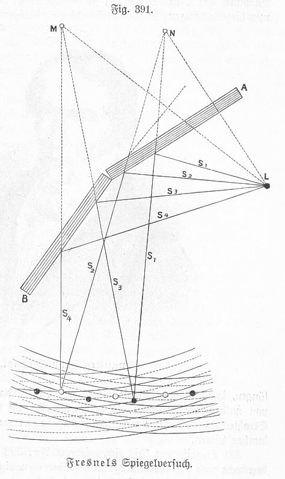

The interference of two point sources is a classic example of wave interference. It is often referred to as double slit interference. The interference pattern is created by two point sources that emit waves with the same wavelength and amplitude. The intereference of the two waves depends then on the path length difference between the two waves
Code
def plot_angle(ax, pos, angle, length=0.95, acol="C0", **kwargs): vec2 = np.array([np.cos(np.deg2rad(angle)), np.sin(np.deg2rad(angle))]) xy = np.c_[[length, 0], [0, 0], vec2*length].T + np.array(pos) ax.plot(*xy.T, color=acol,ls="--")return AngleAnnotation(pos, xy[0], xy[2], ax=ax, **kwargs)plt.figure(figsize=get_size(12,12))# Point sources positionsd =2# source separationy1, z1 =0, -d/2# source 1y2, z2 =0, d/2# source 2# Draw circular wavefrontstheta = np.linspace(0, 2*np.pi, 100)n_circles =5wavelength =2# spacing between wavefrontsfor i inrange(n_circles): r = i * wavelength# Wavefronts from source 1 plt.plot(r*np.cos(theta) + y1, r*np.sin(theta) + z1, 'b:', alpha=0.5)# Wavefronts from source 2 plt.plot(r*np.cos(theta) + y2, r*np.sin(theta) + z2, 'r:', alpha=0.5)# Draw screenscreen_z = np.linspace(-10, 10, 100)screen_y = np.ones_like(screen_z) *16plt.plot(screen_y, screen_z, 'k-', linewidth=2, label='Screen')# Example point on screenP = np.array([16, 4]) # point coordinates [y, z]# Draw paths from sources to point Pplt.plot([y1, P[0]], [z1, P[1]], 'b-', label='Path 1')plt.plot([y2, P[0]], [z2, P[1]], 'r-', label='Path 2')plt.plot([0, P[0]], [z2, P[1]], 'k-', label='Path 2')# Calculate and show path lengthsr1 = np.sqrt((P[0]-y1)**2+ (P[1]-z1)**2)r2 = np.sqrt((P[0]-y2)**2+ (P[1]-z2)**2)path_diff =abs(r2 - r1)# Add sourcesplt.plot(y1, z1, 'bo', label='Source 1')plt.plot(y2, z2, 'ro', label='Source 2')# Label source separationplt.plot([y1-0.5, y1-0.5], [z1, z2], 'k-', linewidth=1)plt.text(y1-2, -.2, 'd', fontsize=12)# Add angle annotationcenter = np.array([0, 0]) # center between sourcesangle = np.arctan2(P[1], P[0]) # angle to point Pkw =dict(size=500, unit="points", text=r"$\theta$")plot_angle(plt.gca(), center, angle*180/np.pi, length=16,acol="k",textposition="inside", **kw)plt.xlabel('y')plt.ylabel('z')plt.axis("equal")plt.axis('off')plt.show()
Double slit interference as the interference from two point sources on the left and the wave amplitudes on the right. The interference pattern is created by two point sources that emit waves with the same wavelength and amplitude. The intereference of the two waves depends then on the path length difference between the two waves.
Wave Interference Pattern
The interference pattern depends on the relative phase of the two waves. The phase difference can be calculated from the path length difference between the two waves and the path length difference can be calculated considering the angle \(\theta\) between the line connecting the two sources and the line connecting the sources to the point on the screen. The path length difference is then given by
\[
\Delta s = s_2 - s_1 = d \sin(\theta)
\]
and consequently the phase difference is given by
\[
\Delta \phi = \frac{2\pi}{\lambda} \Delta s = \frac{2\pi}{\lambda} d \sin(\theta)
\]
Correct path length difference
The path length difference given above is only approximately correct. The exact calculation would involve the geometry of the problem and the path length difference would be calculated as \(\Delta s = \sqrt{d^2 + L^2 - 2dL \cos(\theta)} - \sqrt{d^2 + L^2 - 2dL \cos(\theta)}\). Note that when observing the pattern on the screen with the help of a lens that is placed at the focal distance from the screen, the two path would correspond to parallel rays and the path length difference assumed above would be correct.
As constructive interference occurs when the phase difference is a multiple of, i.e. \(m 2\pi\), the constructive interference will be observed when
\[
\sin(\theta) = m \frac{\lambda}{d}
\]
Constructive interference from two sources
Constructive interference from two sources separated by a distance \(d\) will be observed at an angle \(\theta\) when \(\sin(\theta) = m \frac{\lambda}{d}\), where \(m\) is an integer. The orders of the constructive interference are labeled as \(m = 0, 1, 2, 3, \ldots\) and the \(m=0\) constructive interference is the central maximum. The first order constructive interference angle with scale with the wavelength as \(\lambda\) and the inverse distance between the sources as \(1/d\), i.e. larger wavelength will lead to larger angles and larger source separation will lead to smaller angles.
This scaling is a common feature in many interference applications and the foundation of spectrocopy!
If the screen is at a distance \(L\) from the sources, the angle \(\theta\) can be calculated as \(\theta = \arctan(y/L)\), where \(y\) is the distance from the center of the screen.
Inserting the phase difference into the intensity formula, we get
Intensity pattern of two sources at a screen at a distance L. The sources are separated by a distance d and the wavelength of the waves is \(\lambda\).
The interference from two point sources has immediate consequences for the resolution of optical instruments. The resolution of an optical instrument is the ability to distinguish between two closely spaced objects. The Abbe criterion states the the minimum resolvable distance \(d\) between two objects is given by
\[
d = \frac{\lambda}{2 \sin(\theta)}
\]
where \(\lambda\) is the wavelength of the light and \(\theta\) is the angle subtended by the two objects at the lens. The Abbe criterion is derived from the condition that the microscopy lens has to collect at least the first minimum of the interference pattern of the two objects. This first destructive interference is the information that is needed to separate the two objects from one object.
Fresnel double mirror and biprism experiment
One of the first experiments that demonstrated the wave nature of light was the Fresnel double mirror experiment. In this experiment, a light source is placed in front of two tilted mirrors. The light is reflected from this mirror to a screen. The interference pattern that is observed on the screen is due to the interference of the light that is reflected from the two mirrors. The interference pattern is similar to the one that is observed in the Young’s double slit experiment as the two mirrors “immitate” two virtual light sources behind the tilted mirror.

Fresnel double mirror experiment
A similar experiment is done with the so-called Fresnel biprism. The Fresnel biprism is a prism that is cut in half and the two halves are separated by a small distance. The light that is incident on the biprism is split into two beams that are then recombined on a screen. The interference pattern that is observed on the screen is due to the interference of the two beams.